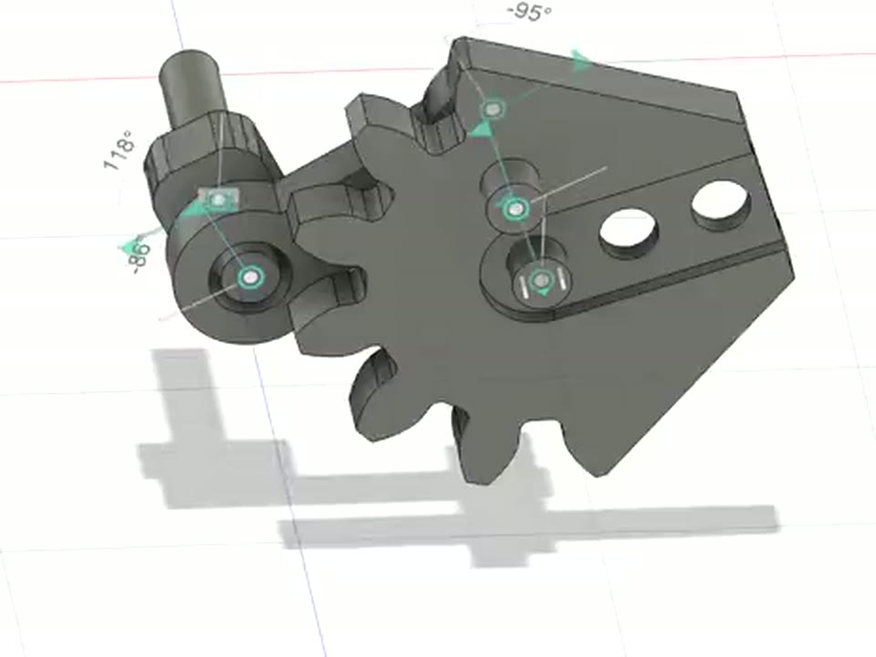
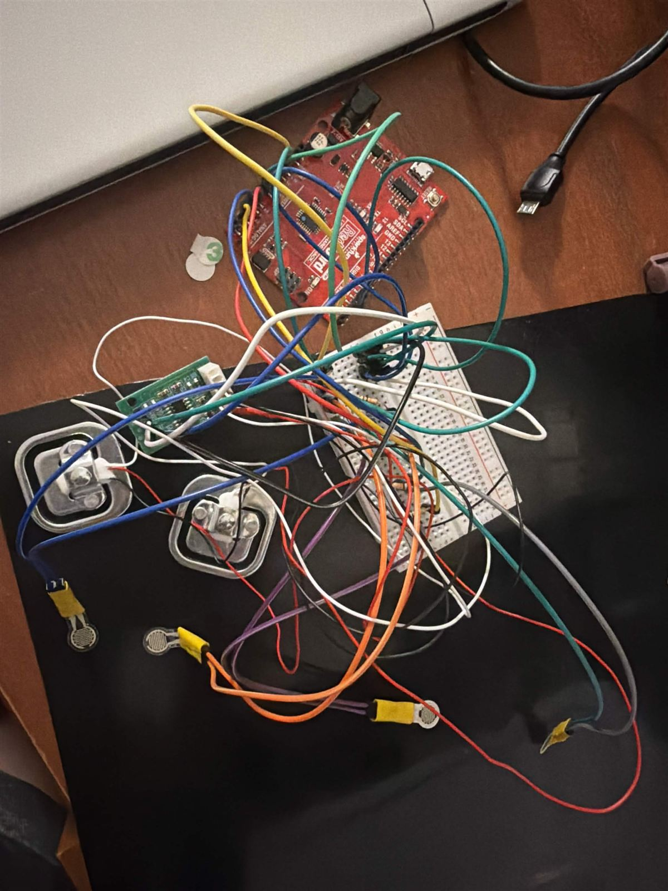
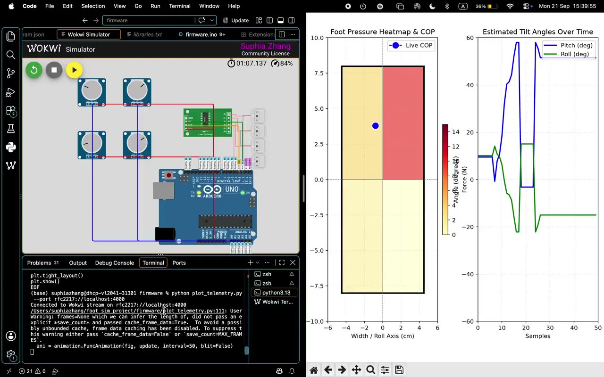

Suphia Zhang
I’m a mechanical engineering student at Cornell with a minor in aerospace engineering. I lead mechanical design for Bootleg, a 4-person combat robotics side project, design hexapod legs and tactile foot sensors with Cornell Physical Intelligence, and I’m helping build a flapping-wing robot that can both swim and fly in the Bio-Inspired Fluid Lab. I like owning the whole loop: sketching, CAD, machining, testing, and redesigning.
Projects
2 items-

Flapping-Wing Aerial-Aquatic Vehicle
Wing mechanism work on a ~300 g diving-bird robot that swims and flies, modeled on MIT’s FAAV. I built a simulation assembly of the crank, gear, and linkage drive to check its range of motion before fabrication.
Full project → -

Tactile Foot Sensor
A Velostat taxel-array foot sensor in a 3D-printed TPU housing for the Symbiote hexapod. Four pressure inputs stream to an Arduino, and a Python script plots a live pressure heatmap with centre of pressure and foot tilt.
Full project →
No projects in this category yet.
Side projects
Outside teams and classes
Experience
| Capability | Tools and skills · click one to see where it was used |
|---|---|
| CAD & design | |
| Fabrication | |
| Programming | |
| Teamwork & work | |
| Languages | English and Fuzhounese (native), Mandarin and Spanish (conversational) |
Writing
Build logs-

LOG-02 21 Sep 2026Foot sensor: simulation first, then hardware
I proved out the foot sensor’s four pressure inputs in an Arduino simulation driving a live heatmap, then wired the first breadboard prototype and streamed real readings.
Read log → -
LOG-01 17 Sep 2026
Flapping-wing drive: first motion study
I assembled the crank, gear, and linkage in Fusion 360 and ran a motion study to check the joint range before anything gets fabricated.
Read log →